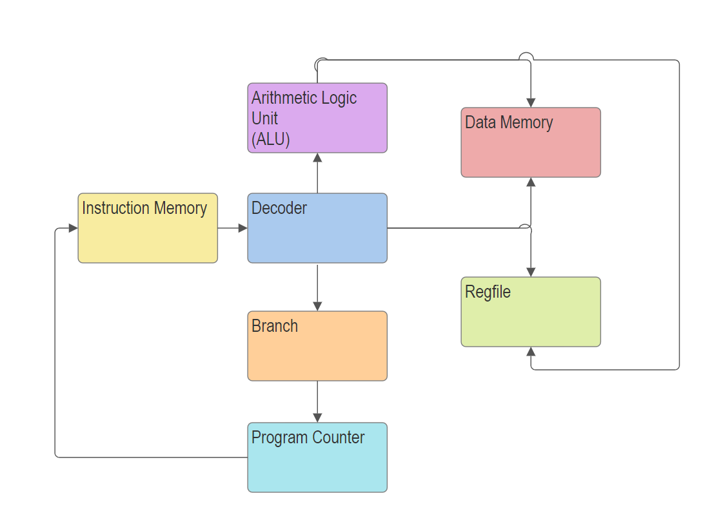
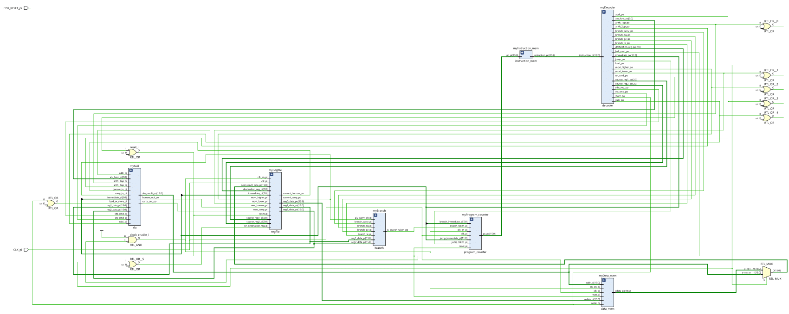

Digital Logic Design
As part of Rice's Digital Logic Design class (ELEC 326), I completed a series of assignments to create a rudimentary processor. This included the creation of a program counter, branch, decoder, alu, and register file for a 16-bit instruction set given to us by Dr Peter Varman. A logic diagram of the processor is shown below.
Once the logic for the CPU was designed, I was then tasked with converting the logic I'd designed to a series of Verilog files which could be uploaded onto a Xilinx XC7S50 FPGA. This was done through AMD's Vivado Design Suite. I then programmed the FPGA to simulate the processor, and ran sample programs in real time to test its validity. Links to the Verilog files can be found here.
This project taught me a lot of vital lessons about logic design. the components of a CPU are very interconnected, and completing this project required deep-reaching and intuitive understanding of how these modules interact with one another to produce the results that we seek. Making this processor also helped to teach me the basics of sequential circuit timing, compound logic, and pipelining.